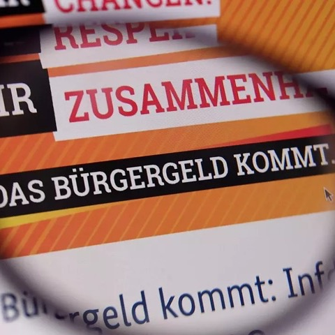

Writing
Blog
Economics, research, reflections and project updates.
Getting Started: Measuring Hamburg’s Solar Mandate
What does it take to identify a causal effect from an energy policy mandate? Early thoughts on the design challenges of my bachelor’s thesis.

Bürgergeld: Daten- und Faktenüberblick
What is actually true about Bürgergeld? An overview of the key figures — from recipient numbers and open positions to costs.
Do Sugar Taxes Reduce Childhood Obesity? What the Data Says
Key findings from a DiD study comparing the UK and Ireland’s 2018 SSB tax against Germany and Switzerland — the effect was negative but not statistically significant.